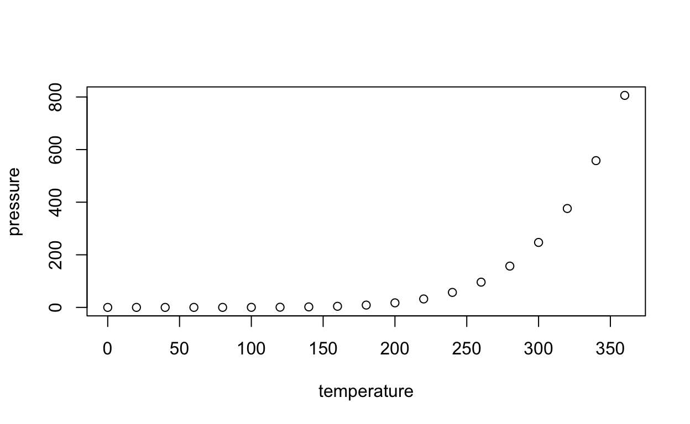

Scaffolding, hints, and solutions

Write an R statement to compute the numerical value of x.
..trig_function..( ..angle.. )15 * sin(53 * pi / 180)Is x a vertical or horizontal difference? Pick the appropriate trig function.Sine is for vertical, cosine for horizontal.The angle should be in radians.The four questions of passing
- What’s to keep students from paging through the hints? Are there consequences?
- Nothing, unless you log each event.
- What’s there to ensure that the final answer is correct?
- Nothing, unless you log that event and check it later.
- What’s in the hint for me?
- A student who already knows the
sinpart of the answer still has to walk through that hint.
- A student who already knows the
- What happens to the student who doesn’t even know what to ask, and just presses “Run.”
Once more, with feeling feedback.
# USER_CODE <- quote("15 * sin(53*pi/180) + 2")
# USER_CODE <- quote("sin(53*pi/180)")
trig_2_check <- function(USER_CODE) {
code <- for_checkr(USER_CODE)
t1 <- if_empty_submission(code, message = "OK. Let's get you started. Pick a trig function such as sin(), cos(), tan(), giving the angle as an argument. Perhaps something like tan(40). This won't be right, but it will get you on track. ")
t1 <- line_calling(t1, sin, cos, tan, message = "You should be using a trigonometric function.")
t1 <- line_calling(t1, sin, message = "Make sure to pick the right trig function. cos() does horizontal lengths, sin() does vertical lengths.")
if (failed(t1)) return(t1)
a1 <- trig_radian_check(t1, 53*pi/180)
if (failed(a1)) return(a1)
t2 <- line_where(code, insist(F == `*`, "Remember to multiply by the length of the hypotenuse."))
t3 <- arg_calling(t2, `*`)
a1 <- arg_number(t3, 1, insist(V == 15, "How long is the hypothenuse? It says right on the diagram."))
a2 <- arg_number(t3, 2, insist(V == 15, "How long is the hypothenuse? It says right on the diagram."))
if (failed(a1 %or% a2)) return(a2)
line_where(t2, insist(is.numeric(V)),
insist(abs(V - 11.98) < 0.01, "{{V}} is a wrong numerical result. It should be about 11.98."),
passif(TRUE, "Good!"))
}
trig_2_check(USER_CODE)Hello, World!
"Hello, World!"#USER_CODE <- "\"Hi world\""
code <- for_checkr(USER_CODE)
line_where(code, passif(TRUE, "Nice!"))Once more, with feeling feedback.
Write the one-line version of “Hello, World!” in R. Your code should cause the message
Hello, World!to appear.
hello_check(USER_CODE)"Hello, World!"The man behind the curtain
Ordinarily, you would not show students the checkr statements implementing this behavior. But our purpose here is to introduce checkr, So here are the statements for the above exercise.
[1] code <- for_checkr(USER_CODE)
[2] res <- misconception(code, line_where(code, insist(is.null(F))),
[3] message = paste("Just typing the string doesn't do it. Note that the output",
[4] "has quotes and is formatted as an output, not a simple message."))
[5] res <- misconception(res, line_where(res, insist(F == print)),
[6] message = paste("Using print() isn't right.", "True, that's the way character strings are displayed,",
[7] "but the format of the display is as a quoted output and",
[8] "not just a simple message."))
[9] res <- line_calling(res, cat, message, message = "Try the cat() or message() functions.")
[10] check(arg_number(res, 1), passif(V == "Hello, World!", "Good job!"),
[11] failif(tolower(V) == "hello, world!", "Get the capitalization right!"),
[12] failif(TRUE, "The string should be 'Hello, World!', not '{{V}}'."))Breaking this down, line by line:
- [1] accepts the user submission from
learnr. This is always calledUSER_CODE. The functionfor_check()does some pre-processing of the user submission to turn it into evaluated code and format it for use in latercheckrfunctions. - [2] tests for a particular kind of mistaken answer. The
misconception()function will generate acheckrfail message, if the pattern identified in the second argument passes. That pattern,line_where(code, is.null(F)), means, “scan the code looking for a line where no function is being used.” This will captures a line that contains only a character string. - [5] tests for another specific misconception, that the user invokes
print()on the string. - [9] looks whether the function invoked by the user is
cat(). If not, the check fails. (Note that [5] already ruled out thatprint()was being invoked.) - [10] checks the argument to the
cat()function. (We know it’scat(), because [9] has established this.) If that argument is exactly `“Hello, World!” the submission passes. Otherwise, we check for a particular error involving capitalization and, if that’s not the case, generate a message to tell the student what’s wrong.
Depending on the submission, any of the checks on lines 2, 5, 9, and 10 might fail. If a check fails, later checks that use the previous result will short circuit to a failed check. For instance, if the check on line [2] fails, the remaining checks won’t be performed in detail: they will just pass along the failed result from line [2].
An instructor with a different pedagogical approach might prefer to structure the checking in an entirely different way. For instance, here are checkr statements that simply tell the user whether or not the submission did what was requested:
## [1] code <- for_checkr(USER_CODE)
## [2] line_binding(code, cat("Hello, World!"), passif(TRUE, "That's right."),
## [3] fail = "No. Try aain.")"Hello, World!"hello_fun_strict(USER_CODE)R Markdown
This is an R Markdown presentation. Markdown is a simple formatting syntax for authoring HTML, PDF, and MS Word documents. For more details on using R Markdown see http://rmarkdown.rstudio.com.
When you click the Knit button a document will be generated that includes both content as well as the output of any embedded R code chunks within the document.
Slide with Bullets
- Bullet 1
- Bullet 2
- Bullet 3
Slide with R Output
summary(cars)## speed dist
## Min. : 4.0 Min. : 2.00
## 1st Qu.:12.0 1st Qu.: 26.00
## Median :15.0 Median : 36.00
## Mean :15.4 Mean : 42.98
## 3rd Qu.:19.0 3rd Qu.: 56.00
## Max. :25.0 Max. :120.00Slide with Plot
